Manual Book Appnea
Panduan lengkap memakai Appnea — platform sekolah freediving: katalog kursus, jadwal, booking, dan panel admin.
Dokumen ini dibagi tiga bagian sesuai siapa yang memakainya:
- Pengunjung — orang yang browsing website, belum tentu punya akun
- Murid — orang yang sudah daftar dan mau booking kursus
- Admin — tim Appnea yang mengelola isi website dan booking
Kalau kamu mencari cara menyiapkan environment dan menjalankan aplikasinya,
itu ada di WHAT_NEEDED.md, bukan di sini.
Alamat penting
| Untuk siapa | Alamat |
|---|---|
| Pengunjung dan murid | http://localhost:5173 |
| Admin | http://localhost:3000/admin/login |
Akun bawaan dari data contoh, keduanya berpassword changeme123:
| Peran | |
|---|---|
admin@appnea.test |
Admin, bisa masuk panel admin |
student@appnea.test |
Murid biasa, bisa booking |
Bagian 1 — Untuk Pengunjung
1.1 Halaman depan
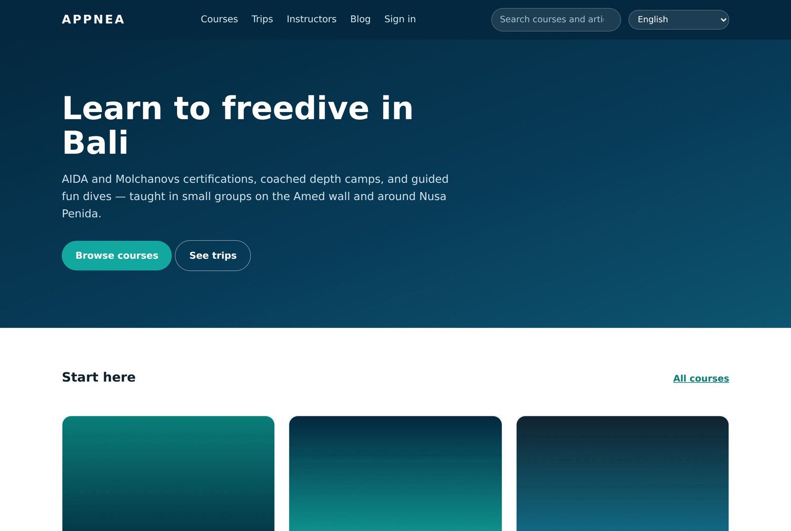
Halaman depan punya tiga bagian:
- Hero di atas, dengan dua tombol: Browse courses dan See trips
- Start here — tiga kursus pertama, diurutkan dari yang paling singkat
- From the blog — tiga artikel terbaru
Di header ada menu utama, kotak pencarian, dan pemilih bahasa. Header ini menempel di atas, jadi tetap kelihatan waktu kamu scroll.
1.2 Mengganti bahasa
Dropdown di kanan atas mengganti bahasa antara English dan Bahasa Indonesia.
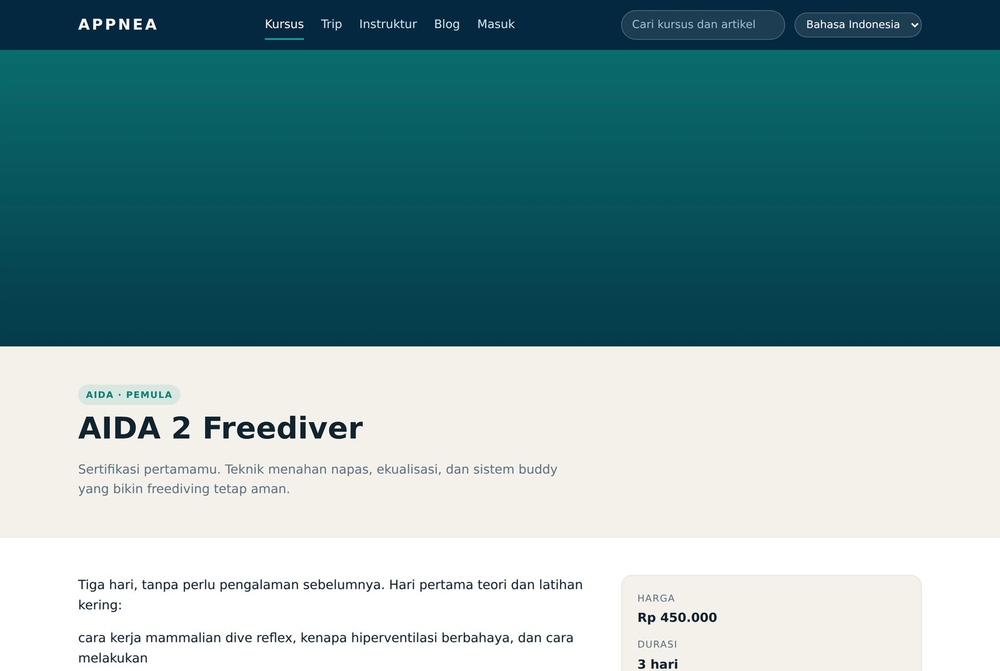
Yang perlu diketahui soal ini:
- Yang berganti bukan cuma menu dan tombol, tapi isi kursus dan artikelnya juga — judul, ringkasan, dan deskripsi punya versi Indonesia sendiri di database.
- Kalau ada bagian yang belum diterjemahkan, bagian itu tetap tampil dalam bahasa Inggris, bukan kosong. Jadi halaman selalu utuh walaupun terjemahannya baru setengah jalan.
- Pilihan bahasamu diingat lewat cookie. Kunjungan berikutnya langsung pakai bahasa yang sama.
- Kalau kamu belum pernah memilih, website menebak dari pengaturan bahasa browser kamu.
1.3 Melihat daftar kursus
Klik Courses di menu.
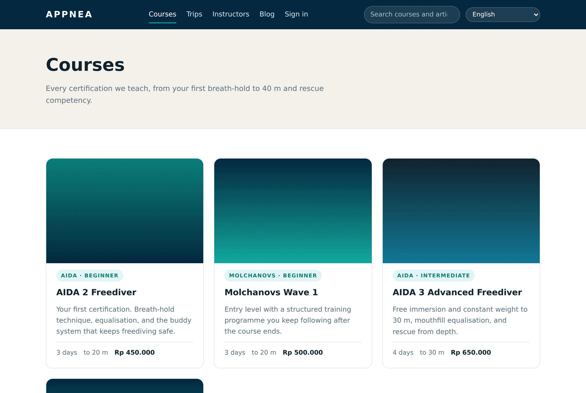
Tiap kartu menampilkan agensi sertifikasi (AIDA, SSI, atau Molchanovs), level, judul, ringkasan singkat, durasi, target kedalaman, dan harga.
Kursus diurutkan dari durasi terpendek, jadi kursus pemula muncul lebih dulu.
1.4 Halaman detail kursus
Klik salah satu kartu kursus.
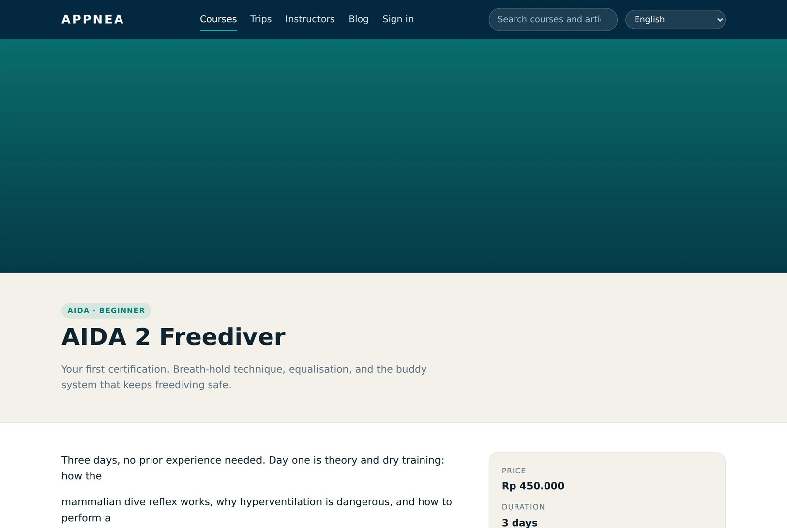
Di sini kamu dapat deskripsi lengkap, dan di kolom kanan ada ringkasan fakta: harga, durasi, target kedalaman, dan agensi.
Scroll ke bawah untuk melihat jadwal.
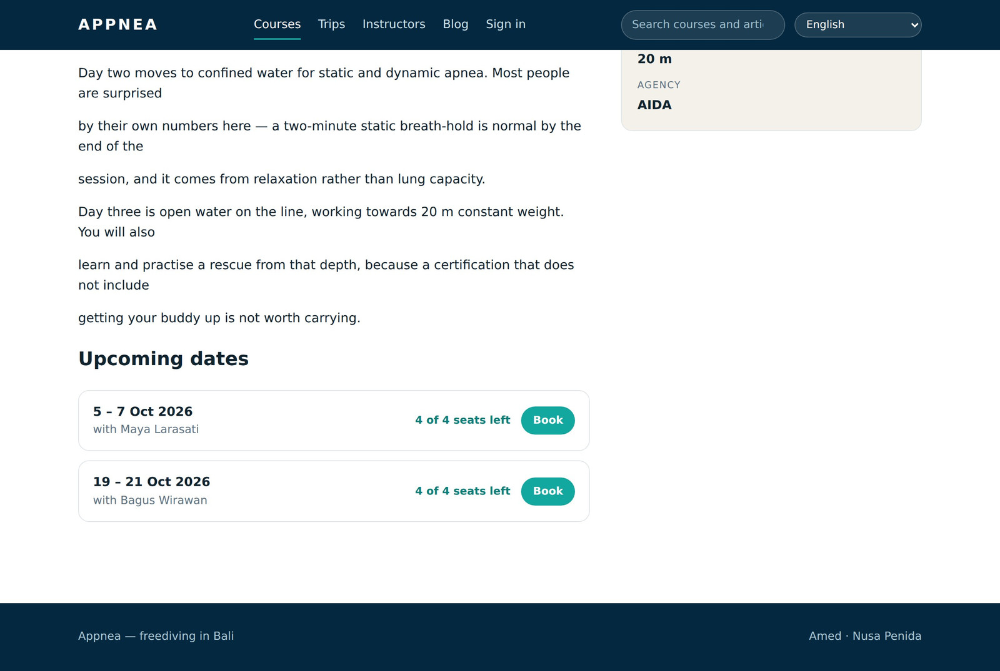
Tiap baris jadwal menampilkan:
- Tanggal mulai dan selesai
- Instruktur yang mengajar, atau "Instructor to be assigned" kalau belum ditentukan
- Sisa kursi, misalnya "3 of 4 seats left"
- Tombol Book
Angka sisa kursi berubah warna waktu tinggal sedikit, dan kalau sudah habis tombol Book hilang, diganti tulisan Fully booked.
Hanya jadwal yang akan datang dan masih dibuka yang ditampilkan. Jadwal yang sudah lewat atau dibatalkan tidak muncul sama sekali.
1.5 Mencari sesuatu
Ada kotak pencarian di header setiap halaman. Ketik lalu tekan Enter.
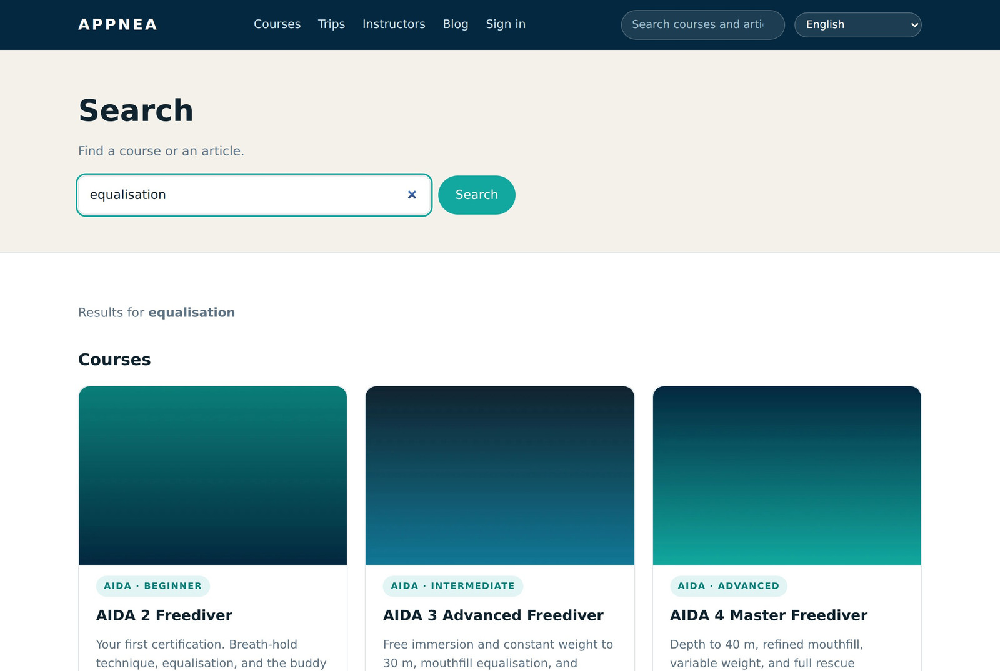
Pencarian menjangkau kursus dan artikel sekaligus, dan mencari sampai ke dalam isi teksnya — bukan cuma judul. Jadi mencari "frenzel" akan menemukan artikel yang membahasnya di paragraf tengah.
Beberapa hal yang bisa kamu lakukan:
| Ketik ini | Hasilnya |
|---|---|
equalisation |
Semua yang menyebut kata itu |
"free immersion" |
Frasa persis, dengan tanda kutip |
depth 40 |
Yang mengandung kedua kata |
courses |
Juga menemukan "course" — pencarian mengerti bentuk jamak |
Hasil diurutkan berdasarkan relevansi: kecocokan di judul menang atas kecocokan di isi tulisan.
Catatan: pencarian saat ini paling optimal untuk teks berbahasa Inggris. Konten Indonesia tetap ketemu, tapi bentuk kata berimbuhan belum dikenali — "penyelam" tidak akan menemukan "menyelam".
1.6 Trip
Menu Trips berisi perjalanan menyelam dan depth camp, terpisah dari kursus sertifikasi.
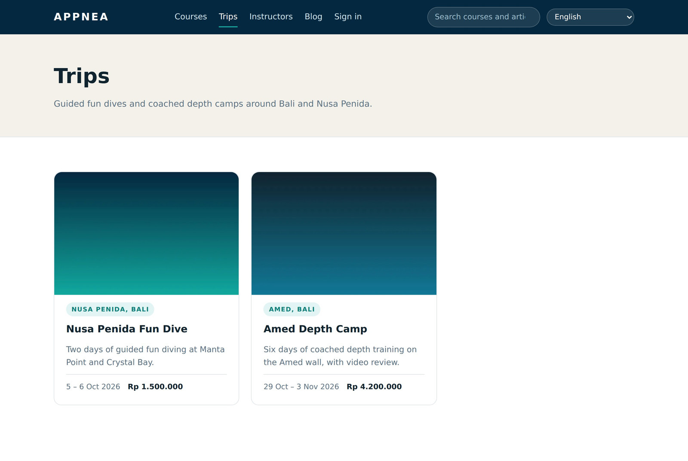
Bedanya dengan kursus: trip punya tanggal yang sudah tetap dan tujuan tertentu, bukan jadwal yang berulang.
Trip belum bisa di-booking lewat website. Hubungi tim untuk mendaftar.
1.7 Instruktur
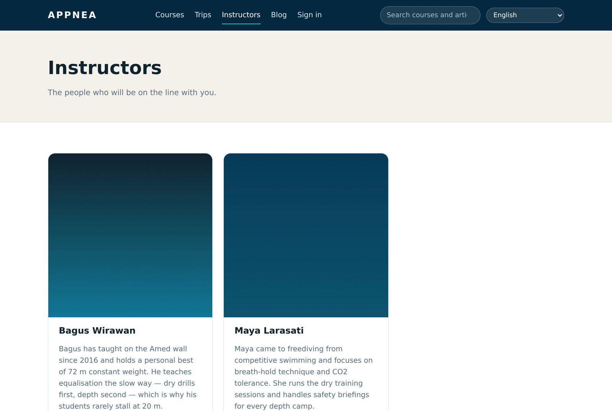
Profil tiap instruktur beserta sertifikasi yang mereka pegang. Urutannya diatur dari panel admin.
1.8 Blog
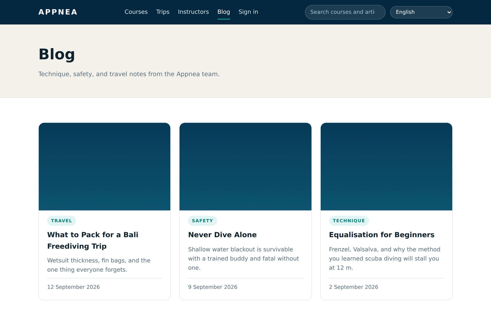
Artikel tentang teknik, keselamatan, dan tips perjalanan. Klik salah satu untuk membacanya.
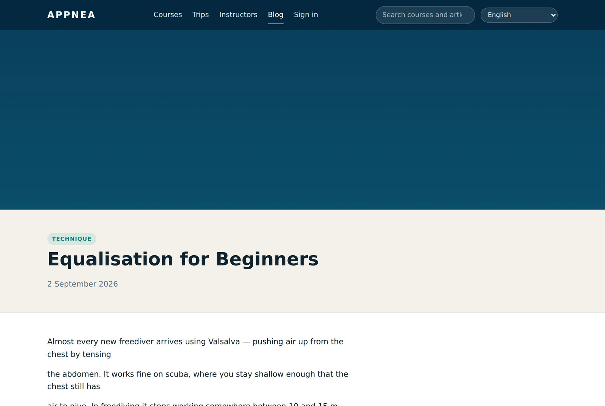
Artikel yang masih berstatus draf tidak muncul di daftar, dan tidak bisa dibuka walaupun kamu tahu alamatnya — akan balas 404. Jadi tulisan yang belum siap tidak akan bocor.
Bagian 2 — Booking Kursus
2.1 Membuat akun
Booking butuh akun. Kalau kamu klik Book tanpa login, website otomatis mengarahkanmu ke halaman masuk, dan setelah berhasil kamu dikembalikan ke halaman booking yang tadi — tidak perlu mencari ulang.
Klik Sign in di menu, lalu Create one.
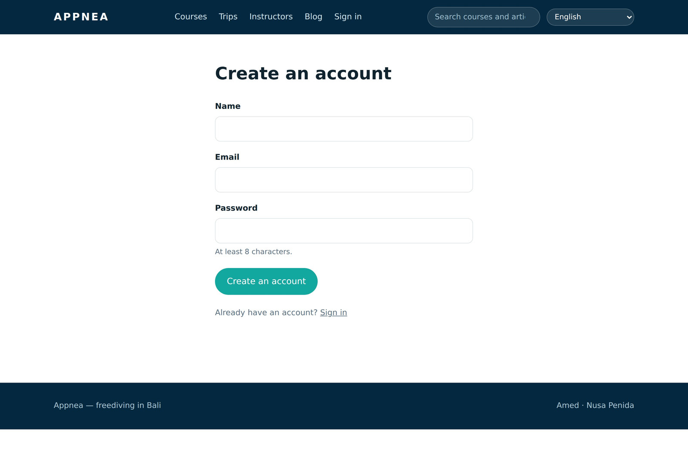
Isi nama, email, dan password. Password minimal 8 karakter.
Kalau sudah punya akun, langsung pakai halaman masuk.
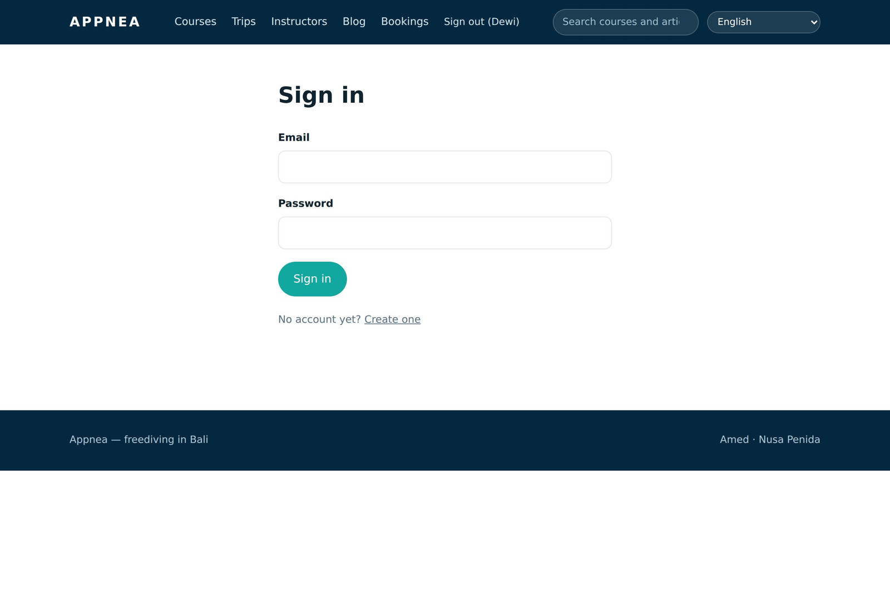
Soal keamanan: kalau email atau password salah, pesannya sama persis untuk kedua kasus. Ini disengaja — supaya orang tidak bisa memakai form ini untuk menebak-nebak email mana yang terdaftar.
2.2 Halaman booking kamu
Setelah daftar, kamu diantar ke halaman Bookings.
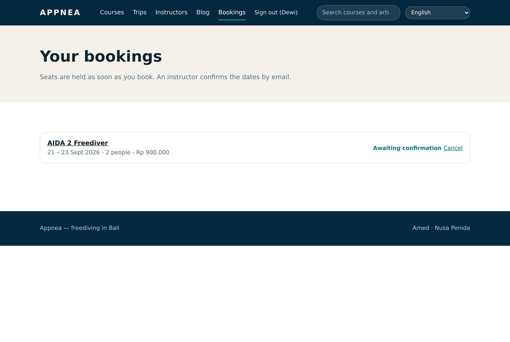
Awalnya kosong. Menu Bookings akan muncul di header selama kamu masih login.
2.3 Melakukan booking
Dari halaman detail kursus, klik Book pada jadwal yang kamu mau.
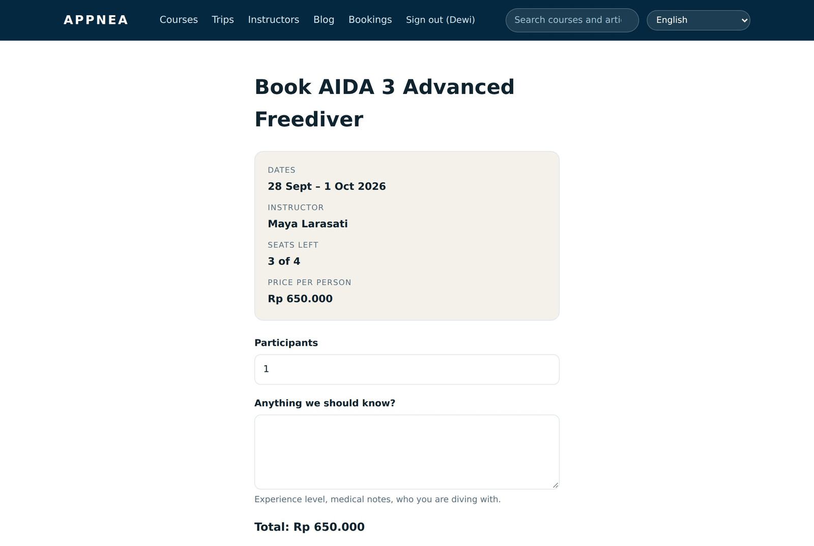
Bagian atas menampilkan ringkasan: tanggal, instruktur, sisa kursi, dan harga per orang.
Isi jumlah peserta dan catatan kalau ada.
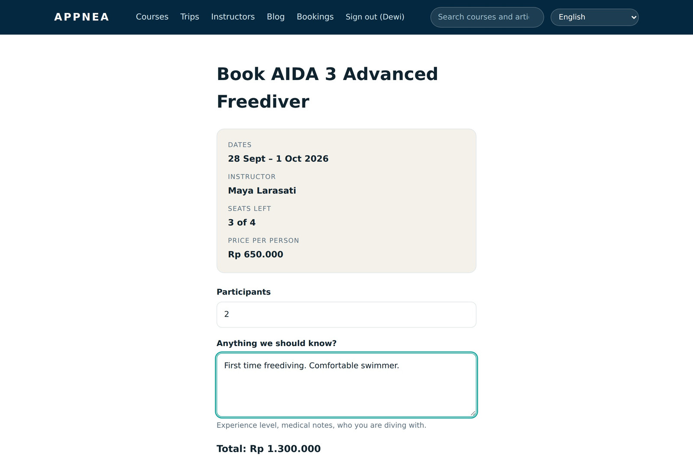
Total harga dihitung otomatis dan berubah begitu kamu mengganti jumlah peserta.
Kolom catatan gunanya untuk memberi tahu instruktur hal-hal yang perlu mereka ketahui lebih dulu: level pengalaman, catatan medis, atau siapa yang menyelam bersamamu.
Klik Request booking.
2.4 Setelah booking
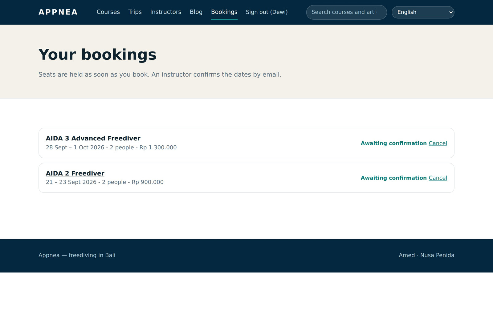
Booking kamu masuk dengan status Awaiting confirmation.
Yang terjadi di balik layar:
- Kursimu langsung ditahan. Sisa kursi di jadwal itu berkurang saat itu juga, jadi tidak ada orang lain yang bisa mengambilnya sambil kamu menunggu.
- Email masuk ke kotak masukmu, berisi rincian booking.
- Belum ada tagihan apa pun. Pembayaran belum terpasang di sistem ini — tim akan menghubungimu.
- Instruktur mengonfirmasi lewat panel admin, dan kamu dapat email kedua.
Kalau dua orang berebut kursi terakhir, hanya satu yang berhasil. Yang kalah mendapat pesan yang jelas, misalnya "only 1 seat(s) left", dan kursinya tidak ikut terpotong. Ini diuji khusus, bukan kebetulan.
2.5 Membatalkan booking
Di halaman Bookings, klik Cancel di samping booking yang mau dibatalkan.
Statusnya berubah jadi Cancelled, dan kursinya langsung kembali ke jadwal supaya orang lain bisa memakainya.
Kamu hanya bisa membatalkan booking milikmu sendiri.
2.6 Keluar
Klik Sign out di header. Nama depanmu tertulis di tombolnya.
Bagian 3 — Untuk Admin
3.1 Masuk ke panel admin
Buka http://localhost:3000/admin/login
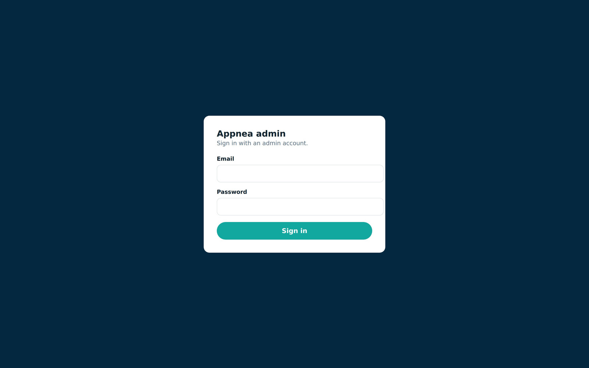
Hanya akun dengan peran admin yang bisa masuk. Akun murid dengan password benar sekalipun tetap ditolak, dengan pesan yang sama persis seperti password salah.
Panel admin terpisah dari website publik. Login di website tidak membuatmu masuk ke panel admin, dan sebaliknya.
3.2 Tampilan panel
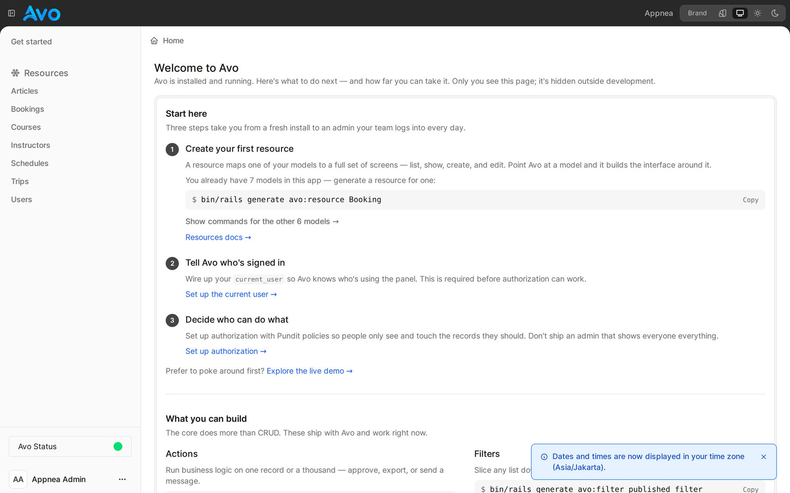
Menu di kiri berisi semua yang bisa dikelola: Article, Booking, Course, Instructor, Schedule, Trip, dan User.
Tiap daftar bisa diurutkan, dicari, dan difilter.
3.3 Mengelola kursus
Klik Course, lalu salah satu kursus, lalu Edit.
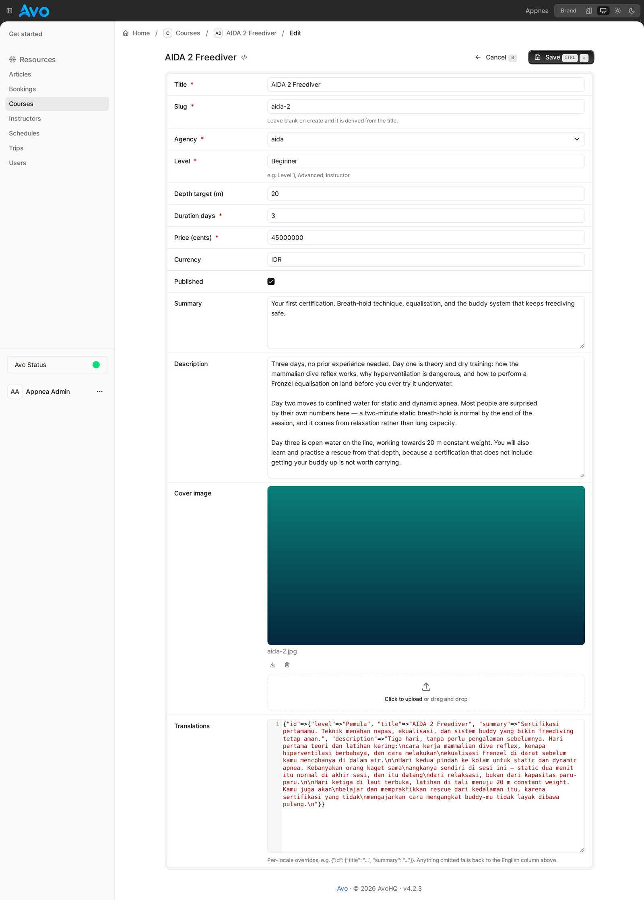
Kolom yang tersedia:
| Kolom | Keterangan |
|---|---|
| Title | Judul kursus |
| Slug | Bagian alamat website. Kosongkan saat membuat baru, akan dibuat otomatis dari judul |
| Agency | AIDA, SSI, atau Molchanovs |
| Level | Bebas diisi, misalnya Beginner atau Advanced |
| Depth target (m) | Target kedalaman, boleh dikosongkan |
| Duration days | Jumlah hari |
| Price (cents) | Harga dalam sen. Rp 450.000 ditulis 45000000 |
| Published | Kalau belum dicentang, kursus tidak muncul di website |
| Summary | Teks pendek untuk kartu di daftar kursus |
| Description | Teks panjang untuk halaman detail |
| Cover image | Gambar sampul |
| Translations | Terjemahan, lihat bagian berikutnya |
Harga ditulis dalam sen, bukan rupiah. Ini supaya tidak ada pembulatan yang meleset saat menghitung total. Rp 450.000 berarti
45000000.
Kursus yang belum dicentang Published tidak muncul di website sama sekali — tidak di daftar, tidak lewat pencarian, dan alamatnya balas 404. Pakai ini untuk menyiapkan kursus baru sebelum diumumkan.
3.4 Mengisi terjemahan
Kolom Translations berisi teks berformat JSON. Bentuknya seperti ini:
{
"id": {
"title": "AIDA 2 Penyelam Bebas",
"level": "Pemula",
"summary": "Sertifikasi pertamamu. Teknik menahan napas dan ekualisasi.",
"description": "Tiga hari, tanpa perlu pengalaman sebelumnya..."
}
}
Aturannya:
"id"adalah kode bahasa Indonesia. Kolom bahasa Inggris yang di atas dipakai sebagai bahasa dasar.- Kamu tidak harus mengisi semuanya. Kolom yang tidak ada di sini otomatis memakai versi Inggris.
- Kalau JSON-nya salah tulis, penyimpanan akan gagal. Perhatikan tanda kutip dan koma.
Kolom yang bisa diterjemahkan:
| Model | Kolom |
|---|---|
| Course | title, level, summary, description |
| Trip | title, destination, summary, description |
| Article | title, excerpt, body |
Profil instruktur belum bisa diterjemahkan. Bio instruktur akan tetap tampil dalam bahasa aslinya walaupun pengunjung memilih Bahasa Indonesia.
3.5 Mengunggah gambar
Kolom Cover image ada di Course, Trip, dan Article. Instruktur punya kolom Photo.
Setelah diunggah, sistem otomatis membuat dua ukuran:
- Card — 800 x 533, untuk kartu di halaman daftar
- Hero — 1800 x 900, untuk bagian atas halaman detail
Keduanya dikonversi ke format WebP supaya ringan. Gambar dipotong, bukan digepengkan, jadi foto potret pun tidak akan merusak tampilan kartu.
Unggah gambar yang lebar dan resolusi tinggi untuk hasil terbaik. Minimal 1800 piksel lebarnya.
3.6 Mengelola jadwal
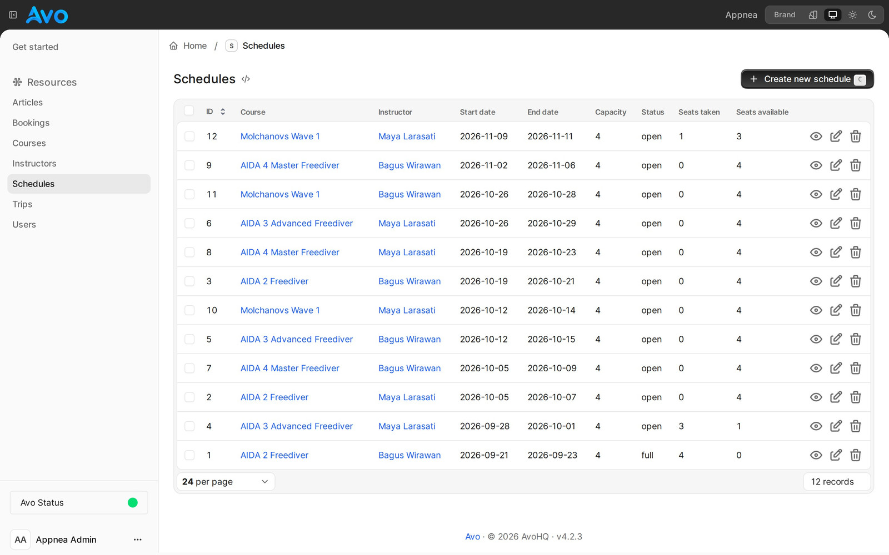
Jadwal menghubungkan kursus dengan tanggal dan instruktur.
| Kolom | Keterangan |
|---|---|
| Course | Kursus yang diajarkan |
| Instructor | Boleh dikosongkan kalau belum ditentukan |
| Start date / End date | Tanggal mulai dan selesai |
| Capacity | Jumlah kursi |
| Status | Open, Full, Cancelled, atau Done |
| Seats taken | Hanya bisa dibaca, tidak bisa diedit |
Kenapa Seats taken tidak bisa diedit? Angka itu dikelola otomatis oleh sistem booking, yang mengunci baris database saat mengubahnya supaya dua booking bersamaan tidak bisa menembus kapasitas. Kalau angkanya bisa diketik manual di sini, pengaman itu jadi percuma dan angkanya bisa tidak cocok dengan jumlah booking yang sebenarnya.
Kalau kamu perlu menambah kapasitas, ubah kolom Capacity, bukan Seats taken.
Mengubah status jadi Cancelled membuat jadwal itu hilang dari website dan tidak bisa di-booking lagi. Booking yang sudah ada tidak ikut terbatalkan otomatis — batalkan satu per satu dari daftar Booking.
3.7 Mengelola booking
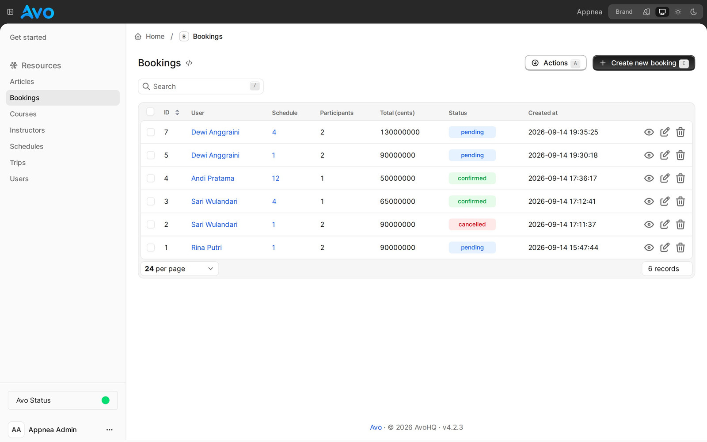
Daftar semua booking beserta statusnya.
Klik salah satu untuk melihat detailnya.
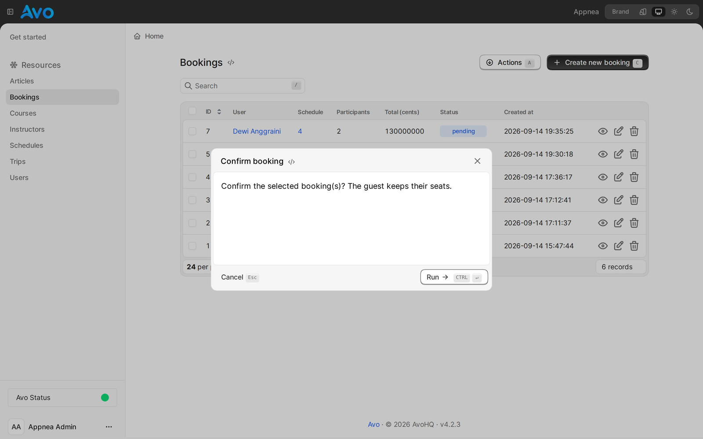
Semua kolom di sini hanya bisa dibaca. Untuk mengubah status, pakai dua tombol aksi di kanan atas:
Confirm booking
Mengubah status jadi Confirmed dan mengirim email konfirmasi ke murid.
Kursinya sendiri sudah tertahan sejak booking dibuat, jadi mengonfirmasi tidak mengubah jumlah kursi.
Cancel booking
Mengubah status jadi Cancelled dan mengembalikan kursinya ke jadwal.
Kalau jadwal tadinya sudah penuh, statusnya otomatis kembali jadi Open.
Kenapa harus lewat tombol aksi, bukan diedit langsung? Karena mengubah status booking harus dibarengi dengan menambah atau mengurangi kursi di jadwal. Kalau statusnya bisa diketik manual, kursinya tidak ikut berubah dan datanya jadi kacau.
Kamu bisa memilih beberapa booking sekaligus lewat kotak centang, lalu menjalankan aksi untuk semuanya sekaligus.
3.8 Mengelola instruktur
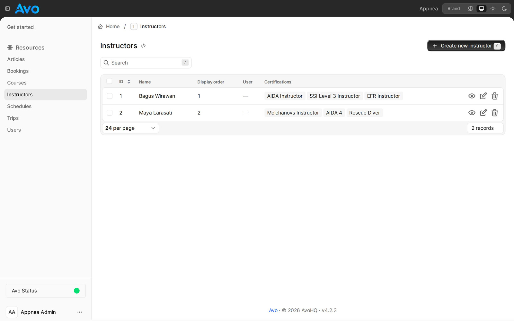
| Kolom | Keterangan |
|---|---|
| Name | Nama instruktur |
| Display order | Angka kecil tampil lebih dulu di website |
| User | Akun login, boleh dikosongkan |
| Certifications | Daftar sertifikasi, ketik lalu Enter untuk tiap item |
| Bio | Profil singkat |
| Photo | Foto |
Kolom User boleh kosong. Profil instruktur bisa ada tanpa orangnya punya akun login. Isi kolom ini hanya kalau instrukturnya memang perlu masuk ke sistem.
3.9 Mengelola artikel
Sama seperti kursus, tapi yang menentukan tampil atau tidaknya adalah kolom Published at:
- Dikosongkan — artikel berstatus draf, tidak muncul di mana pun
- Diisi tanggal lampau — artikel tampil
- Diisi tanggal mendatang — artikel belum tampil sampai waktunya tiba
Ini berguna untuk menjadwalkan tulisan.
Bagian 4 — Email
Sistem mengirim dua jenis email ke murid:
| Kapan dikirim | Isinya | |
|---|---|---|
| Booking received | Begitu murid melakukan booking | Rincian booking, penegasan bahwa belum ada tagihan |
| Booking confirmed | Saat admin menekan Confirm | Tanggal, nama instruktur, dan apa yang perlu dibawa |
Saat development, email tidak benar-benar dikirim. Semuanya ditulis sebagai
file ke backend/tmp/mails/. Untuk membacanya:
cat backend/tmp/mails/*
Email masih berbahasa Inggris. Walaupun website sudah dua bahasa, isi emailnya belum mengikuti pilihan bahasa murid.
Bagian 5 — Pertanyaan yang Sering Muncul
Kursus yang saya buat tidak muncul di website. Cek kolom Published. Kalau belum dicentang, kursus sengaja disembunyikan.
Jadwal tidak muncul di halaman kursus. Tiga kemungkinan: tanggalnya sudah lewat, statusnya bukan Open, atau kursus induknya belum Published. Website hanya menampilkan jadwal mendatang yang masih terbuka dari kursus yang sudah terbit.
Angka sisa kursi terlihat aneh. Cek daftar Booking untuk jadwal itu. Jumlah peserta dari booking yang berstatus Pending dan Confirmed seharusnya sama dengan angka Seats taken. Kalau tidak cocok, kemungkinan ada yang mengubah data langsung di database, bukan lewat aplikasi.
Saya mau menaikkan kapasitas jadwal yang sudah penuh. Ubah kolom Capacity, lalu ubah Status dari Full kembali ke Open.
Gambar yang saya unggah tidak muncul.
Pastikan libvips terpasang di server. Tanpa itu, gambar tersimpan tapi
ukuran-ukurannya gagal dibuat. Cek dengan vips --version.
Ada murid minta dihapus datanya. Batalkan dulu semua booking-nya lewat tombol Cancel booking supaya kursinya kembali, baru hapus akunnya dari daftar User.
Bagaimana cara menambah bahasa ketiga? Perlu perubahan kode, tapi tidak perlu mengubah struktur database. Kolom Translations sudah berbentuk JSON yang bisa menampung banyak bahasa.
Kapan pembayaran online tersedia? Belum dijadwalkan. Struktur datanya sudah disiapkan, jadi menambahkannya nanti adalah pekerjaan integrasi, bukan perombakan.
Bagian 6 — Tampilan di Ponsel
Website menyesuaikan diri dengan layar kecil.
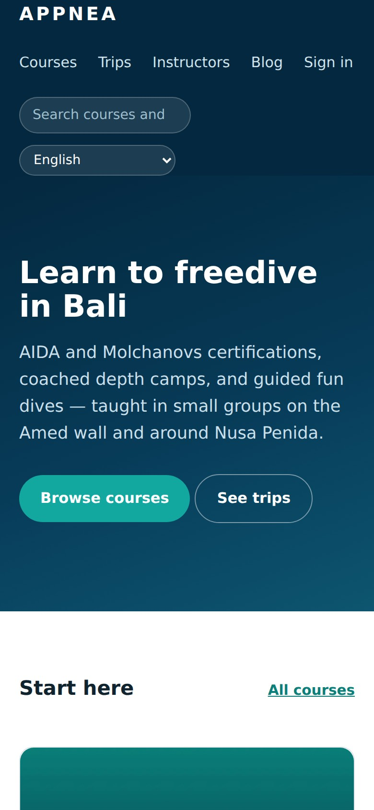
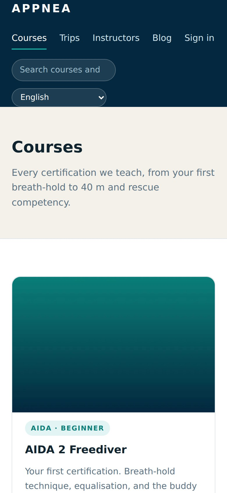
Menu, kotak pencarian, dan pemilih bahasa turun ke baris berikutnya, dan kartu kursus menumpuk jadi satu kolom.
Panel admin juga bisa dibuka dari ponsel, tapi lebih nyaman dikerjakan dari layar besar.